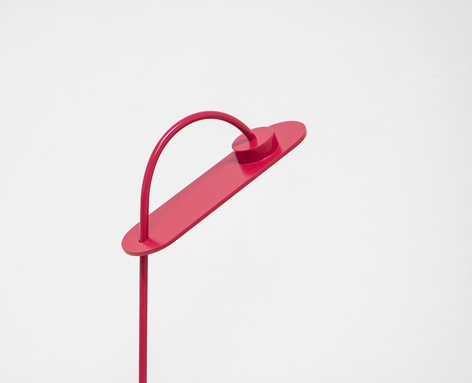
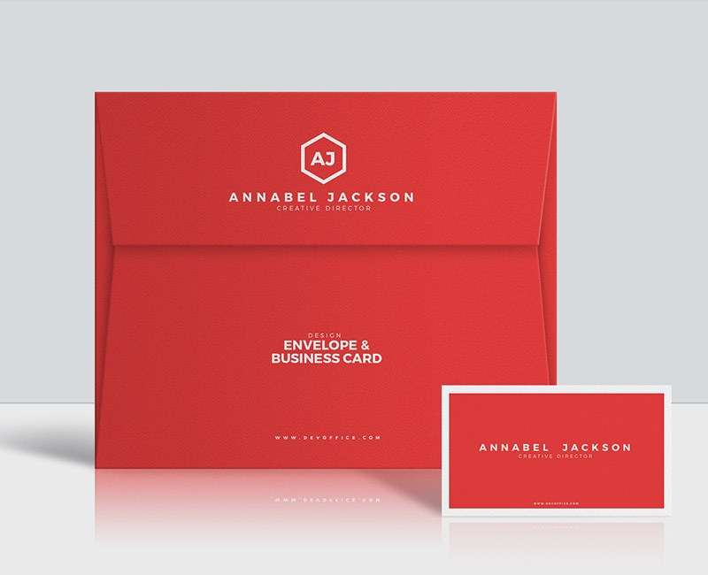

<div id="preload" style="display: none;">
  
  
  
  
  
</div>

<ng-template #myTemplate let-data="data">
  <div style="text-align: center;">
  <h1 style="color:goldenrod">{{data?.someText}}</h1>
</div>
</ng-template>

<mgui-workspace workspaceTitle="Infinite Carousel">

  <ng-container webTools>
    <span fxFlex="1 1 0"></span>
    <button matTooltip="Open documentation in a new browser tab" 
    mat-icon-button (click)="goToDoc()"></button>
  </ng-container>

  <ng-container mobileTools>
    <mat-menu #appMenu="matMenu" [overlapTrigger]="false">
      <button mat-menu-item (click)="goToDoc()">
        
        <span style="margin-left: 17px; vertical-align: middle;">GitHub</span></button>  
    </mat-menu>
    <button mat-icon-button [matMenuTriggerFor]="appMenu">
      <mat-icon>more_vert</mat-icon>
    </button>
  </ng-container>

  <ng-container mobilePrimeTools>
    <button mat-fab style="margin-left: 10px" (click)="goToDoc()" >
      
    </button>

  </ng-container>


    <div #scroller style="width: 100%; height: 100%; overflow: auto">
        <mgui-carousel style="width: 100%; height: 500px" #mc [itemTemplate]="myTemplate" [dataSource]="myData"></mgui-carousel>
    </div>
</mgui-workspace>